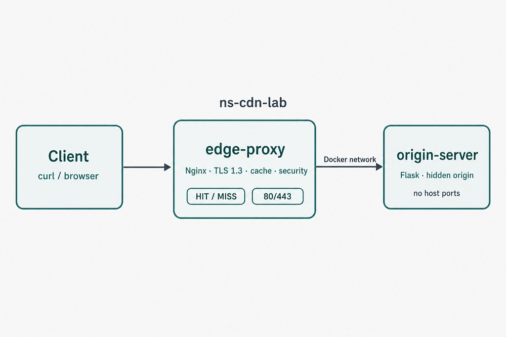
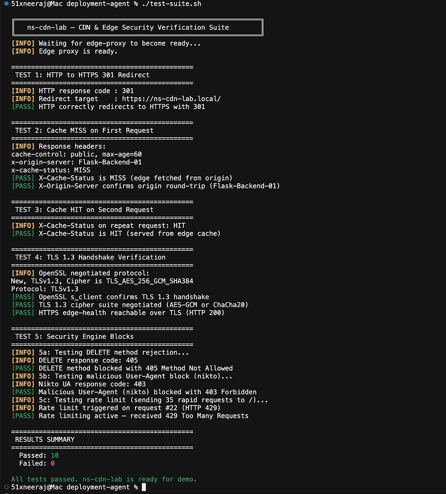
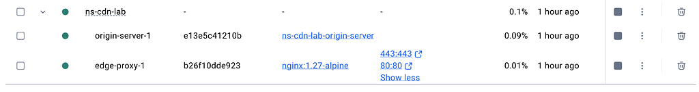
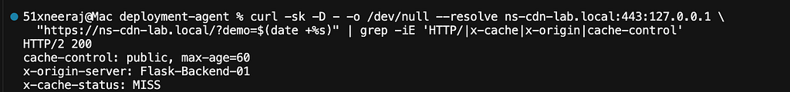
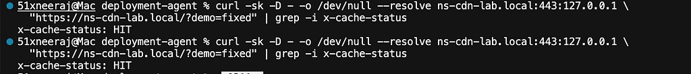

I kept nodding along in CDN meetings. So I built a tiny one on my laptop.
Contents
Last year I noticed a bad habit.
Someone would say “cache miss” or “purge the edge” or “origin is fine,” and I would nod like I was in on it. Later, alone, I would open another blog post, skim a Cloudflare diagram, and still not feel the path in my hands.
I did not need another slide deck. I needed something that answered back.
So I built a small lab: Nginx in front, a Flask app hidden behind it, TLS on the edge, cache headers I could read, and a test script that fails if I am lying to myself.
I call it ns-cdn-lab.
github-repository : https://github.com/neeraj542/ns-cdn-lab
This is what happened while building it, and how the pieces fit, in plain language.
The picture I finally believed #
Big sites do not serve everything from one kitchen.
Your phone hits something nearby first. That nearby box is the edge. The real app — the origin — sits further back. If the edge already has a fresh copy, you get it fast. If not, the edge fetches once, stores it, and the next person benefits.
I kept that in one line on a sticky note:
Client → edge → origin (only when needed)
MISS means the edge went to origin.
HIT means it did not have to.
Cart pages and logins usually skip the public cache. Product images often live there for a while. Once I could say that out loud without checking Twitter, I knew what to build.
What I actually shipped #
Two Docker containers on one private network.
- edge-proxy — Nginx. Ports 80 and 443 on localhost only.
- origin-server — Flask. No host ports. You cannot hit it directly from the laptop the way a normal demo app is hit.
That “no host ports” choice was deliberate. Real CDNs hide origins. I wanted the same shape, even in a toy.
On a miss, origin sends something like Cache-Control: public, max-age=60 and a homemade header, X-Origin-Server, so I can see that the backend really answered. The edge adds X-Cache-Status so I can see HIT or MISS without guessing.
It is not Cloudflare. It is not CloudFront. It will not protect you on the public internet. It is a desk lamp for a dark topic.
The first night it worked #
I ran these commands:
make up
make test

10/10 checks went green. I stared at the terminal longer than I should admit.

Then I tried on CURL:
curl -Ik — resolve ns-cdn-lab.local:443:127.0.0.1 https://ns-cdn-lab.local/
1st request: MISS.

2nd (Same) URL again: HIT.

No dashboard. No account. Just headers. That was the moment the buzzwords got quiet.
How the code is arranged (the non-scary version) #
If you open the repo, you do not need to read everything. Four places matter.
1) docker-compose.yml #
This is the floor plan. Edge and origin share a Docker network. Only Nginx is published to the host. Origin is a neighbour on the network, not a public door on your machine.
2) origin/app.py #
A small Flask app. It serves a page and stamps cache headers. I cared less about pretty HTML and more about whether the edge would honour what the origin claimed.
3) nginx/nginx.conf #
This file is the product.
- It redirects HTTP to HTTPS.
- It terminates TLS 1.3.
- It caches with proxy_cache.
- It maps cache state into X-Cache-Status.
- It blocks silly methods, blocks a short list of scanner user-agents, and rate-limits noisy clients.
I left /edge-health out of the rate limit on purpose. The first time health checks and tests fought my own 429s, I learned why production edges carve out probe paths.
4) test-suite.sh #
Redirect, miss, hit, TLS, 405, 403, 429. If I change config and break the story, the script says so. That matters more to me than a polished README screenshot.
The bugs that made it feel real #
Tutorials skip the ugly parts. Mine did not.
<> TLS cipher footgun.
I put TLS 1.3 suites in ssl_ciphers. On OpenSSL 3, Nginx crash-looped with a cipher mismatch. The fix was ssl_conf_command Ciphersuites. I only remember it because the container would not stay up and I had to read error logs like a suspect.
<> Certificate regenerate while the edge was live.
I reminted certs under a running proxy and then watched host curl fail with connection resets, while inside the container health still looked fine. Docker Desktop and bind-mounted keys can be unkind. Now everyday cert generation reuses files unless I force a new pair, and I recreate the edge when TLS on the host goes weird.
<> Example switching flake.
After swapping origins, sometimes :443 on the host lied until docker compose up --force-recreate edge-proxy. Annoying. Also useful. Labs that never break teach less.
I kept those notes in the troubleshooting doc because future-me will hit them again, and because interviewers ask what went wrong more often than what went right.
Three small recipes after the default demo #
One origin is not enough if you want to talk about real apps.
So the edge stays put, and Compose overrides swap only the origin:
- static site with different TTLs for HTML and CSS
- API where GET can cache and POST does not
- bring-your-own app on a host port, for side projects
The BYO path is the one I use when I am about to put something on Cloudflare. Check headers at home first. Pay money later.
Why I bother publishing this #
I am early in my career. I do not have a decade of edge tickets behind me. What I can show is a public repo, a failing-and-passing test suite, and a demo I can run live:
MISS, then HIT, then a blocked DELETE, then a blocked scanner UA, then a 429 if I hammer it.
That is not a certificate. It is a workbench. For talks, DevRel samples, remote interviews, or contests, a workbench beats a paragraph that says “familiar with CDN concepts.”
I still read vendor docs. I just refuse to nod without a lab anymore.
If you try it tonight #
git clone https://github.com/neeraj542/ns-cdn-lab.git
cd edgeforge-lab-networking
make up
make test
Then break something on purpose. Change a TTL. Send DELETE. Read nginx/nginx.conf once, slowly. When a header changes because of a line you touched, the topic stops being abstract.
Docs are short on purpose: a guide, examples, troubleshooting. I deleted a pile of extra markdown after I realised I was writing a textbook nobody asked for.
End note #
I built ns-cdn-lab because guessing felt worse than being wrong in public.
If it helps you debug one cache header, teach one junior, or walk into a conversation without fake confidence, good. If you find a sharp edge, open an issue or a PR.
I will be over here, still watching X-Cache-Status like it owes me rent.
Follow me over X: https://x.com/51xneeraj
Originally published on Medium.